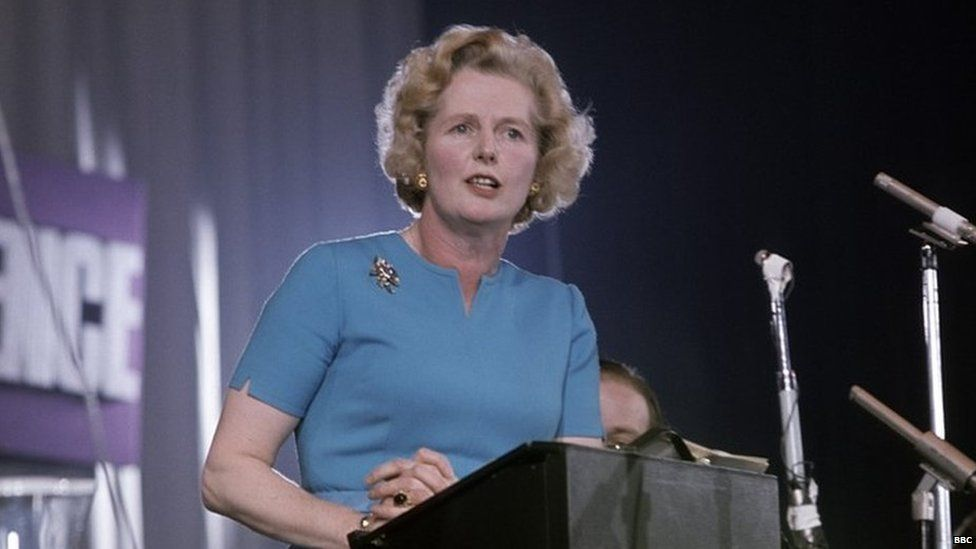
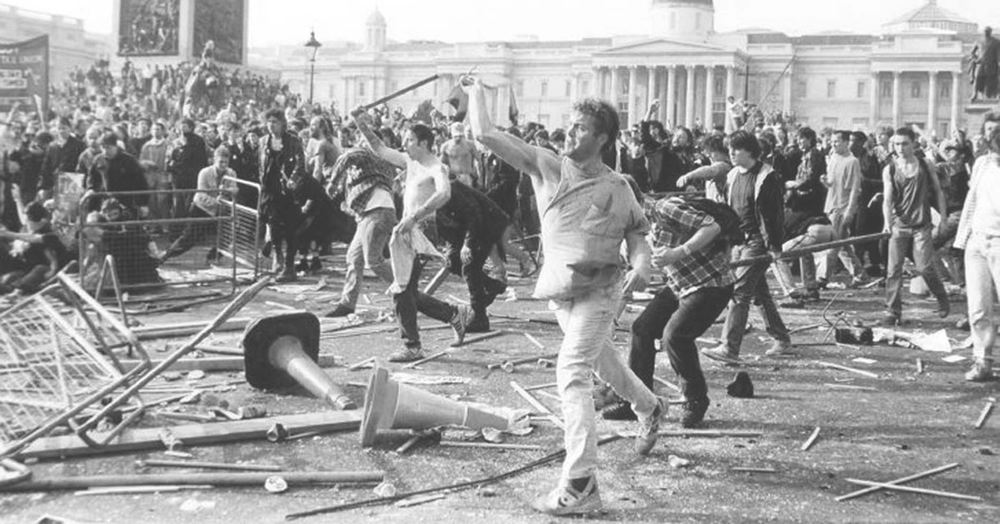

The Iron Maiden and Coservative domination

EN
The Iron Maiden and Coservative domination
EN
Early life and educaiton

Margaret Hilda Roberts was born on 13 October 1925 in Grathem, Lincolnshire. Her Father was Alfred Roberts from Nothamptonshire and her mother was Beatrice Ethel Stephenson from Lincolnshire.
Her father was a local preacher and brought his daughter as a Wesleyan Methodist, attending the Finkin Street Methodist Church. He was also a mayor of Grantham in 1945-1946. She went to Huntingtower Road Primary School and was a great student. After that she was accepted for as scholarship to study chemistry at Somerville College, Oxford.
She graduated in 1947 with a second-class degree in chemistry, after specialising in X-ray crystallography and a degree in Master of Arts in 1950. Although she was studying science she was thinking about becoming a politican. After finishing College she worked as a research chemist until 1951.
Political life
Thatcher first tried to get into the Parliament in 1950 but was unsuccessful. After another try in 1959 she entered the House of Commons, winning the “safe” Conservative seat of Finchley in northern London. She climbed slowly within the party, and at first was a parliamentary secretary in the Ministry of Pensions and National Insurance (1961–64), later became a chief opposition spokesman on education (1969–70) and finally became a secretary of state for education and science (1970–74) in the Conservative government of Edward Heath. After Heath lost two consecutive elections in 1974, Thatcher was the only minister prepared to challenge him for the party leadership. She succeeded and was elected leader in February 1975 and a 15-year leadership that would change the face of Britain started.
Thatcher's ideas
Thatcher's vision was clear she knew what she was against and wanted to change it. She wanted greater independence of the individual from the state. She also thought that governement interfered too much in the economy. That's why she began privatization of state-owned enterprises and sold public housing to tenants. She reduced the amount of money that went into social services such as health care, education and housing. She also limited the amount of money that was printed acoording to the rules of monetarism. She stood out with her moral aboslutism, fierce nationalism and her combative, uncompromising approach to achieving political goals.
First term

Her first term was an economic disaster. She inherited the weak economy of the UK and had to fix it. That lead to the reduction or in some cases elimination of governmantal regulations and subsidies to businesses. This lead to incredible unemployment rate, from 1.3 million in 1979 to more than 2.5 million after 2 years. Inflation doubled in 14 months and production fell immediately. In the end of her first term inflation decreased a bit, but unemployment continued to rise and reached 3 million in 1986. She also started privatization by selling state-owned industries and public services. These include aerospace, television and radio, gas, electricity, water, the state airline and British Steel. The government also sold 1.5 million housing units to their tenants. The situation wasn't looking good for Margaret Thatcher. Despite all the things she had done she got reelected. This was thanks to the Falkland Islands War and the deep divisions within the Labour party. She won the election with over 42%.
Second and third term
Beacuse of the Falklands War Thatcher created a really strong relationship with the USA as she shared a vision with the american president Ronald Reegan about conservatism and the evil Soviet Union. She showed her anticommunism opinion in her 1976 speech with wich she got her nickname the "Iron Lady" from the Soviet Union. She strongly supported NATO and started to adopt more hostile attitude towards the European Integration. She was against the single currency and establishing deeper political union. This opinion started to divide her Cabinet. Later she implemented another controversial policy by adding the poll tax. This policy started outbreaks of street violence and conservatives started to turn against Thatcher. In November 22 she announced her resignation as Conservative Party leader and prime minister.
Developer
Miroslav Mihaylov
Email: miro7543@gmail.com
Phone: +359-98-823-1814
Address: Veliko Tarnovo, Bulgaria
Developer
Petar Nedyalkov
Email: miro7543@gmail.com
Phone: +359-98-823-1814
Address: Veliko Tarnovo, Bulgaria
Help
Support
About us
Contact us
©All rights reserved 2021